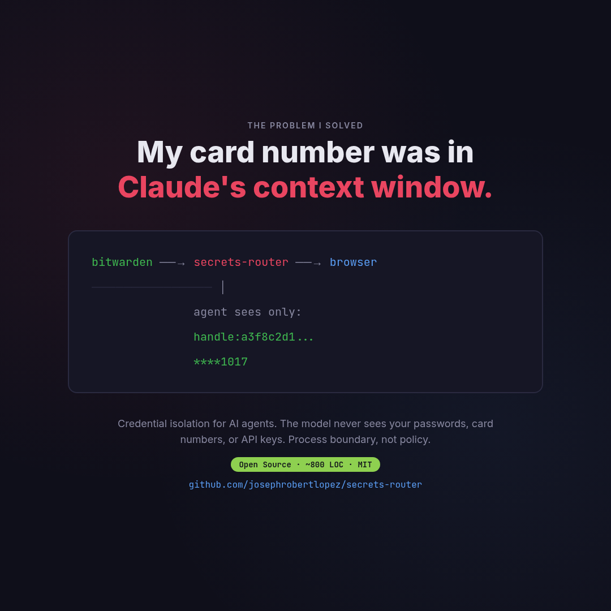

I Taught Claude to Pay My Water Bill
Then my card number ended up in its context window. So I built a tool.
March 2026

I asked my AI agent to pay my water bill. It did. $212.54 to Milwaukee Water Works, confirmation number and everything.Then I checked the conversation log. My full credit card number was sitting in plaintext inside the LLM's context window. The model had seen everything — card number, CVV, expiration. All of it logged in the session transcript.
The Problem
If a credential passes through the model to reach the browser, the model has seen it. Period. No prompt engineering fixes this. The value is in the context window, in the tool call history, potentially in logs.
The standard approach — "don't let agents handle credentials" — means agents can't do anything useful with real money, real accounts, or real APIs. That's not a solution. It's an avoidance.
The Insight
The fix isn't policy ("please don't remember my card number"). It's architecture. You need a process boundary between the agent and the credential values.
encrypted store ──→ secrets-router ──→ browser field
│
agent sees only:
handle:a3f8c2d1...
****1017
The agent sends a credential reference ("use my primary card's number"). A separate process resolves it and fills the browser field directly via Chrome DevTools Protocol. The value goes: Bitwarden → server memory → browser DOM. Zero agent hops.
What I Built
secrets-router is an MCP server (~800 lines) that does three things:
- Opaque handles.
secure_fetch("rbw", "primary card", "number")returnshandle:a3f8c2d1. The agent sees the handle. Never the value. - CDP fill.
secure_fill(handle, "#card-number")resolves the handle inside the server process and fills the browser field via WebSocket. The agent sees"filled [MASKED ****1017]". - YAML recipes. Multi-step workflows (navigate → fill → click → secure_fill → approve → submit) defined in YAML. The agent calls one tool. The server runs the whole flow.
The Human-Teaches-Once Pattern
First time: You do it manually while the agent watches. You say which fields are sensitive and which Bitwarden item to use. The agent generates a recipe.
Second time: The agent runs the recipe. You approve at the payment gate (screenshot + "confirm $216.68?").
Every time after: Autonomous. Confirmation number in your inbox.
How the CDP Bridge Works
The hardest part was getting the credential from the MCP server into Playwright's browser without it passing through Claude's context. The MCP server and Playwright MCP are separate processes — they can't share memory.
The solution: Chrome's --remote-debugging-port flag exposes a WebSocket endpoint. Any process can connect and execute JavaScript on the page:
# Find Playwright's browser
port = find_cdp_port() # scans process args
# Connect via WebSocket
ws = connect(f"ws://localhost:{port}/devtools/page/...")
# Fill the field — value never leaves this process
ws.send(Runtime.evaluate(
`document.querySelector('#card').value = '${card_number}'`
))
The card number exists only inside the _cdp_fill_field() function scope. After the field is filled, the variable goes out of scope. The MCP tool returns only {"status": "filled", "masked": "****1017"}.
The Recipe Format
credentials:
card:
store: rbw
item: "primary card"
fields:
number: number
cvv: cvv
steps:
- action: navigate
url: https://paywater.milwaukee.gov
- action: secure_fill
target: { selector: 'input[name="card"]' }
credential: card.number
percept: "filled: Card [MASKED ****${card.number|last4}]"
- action: await_approval
message: "Confirm payment of ${extract.total}?"
- action: click
target: { text: "Make a Payment" }
The recipe contains credential references, never values. Safe to commit to git. Safe to share. The agent reads the recipe, executes it, and sees only masked percepts at every step.
What's In the Repo
server.py— MCP server with handle store, 5 credential backends, CDP fillengine.py— Recipe execution engine with approval gatesactuators/playwright_cdp.py— Browser automation via Chrome DevTools Protocolrecipes/— YAML recipe examples (bill pay, login, API call)skills/— 6 Claude Code skills (record, validate, debug, test, audit)
Supports rbw, Bitwarden CLI, pass, age-encrypted YAML, and environment variables as credential backends.
github.com/josephrobertlopez/secrets-router — MIT license, ~800 lines, zero frameworks.